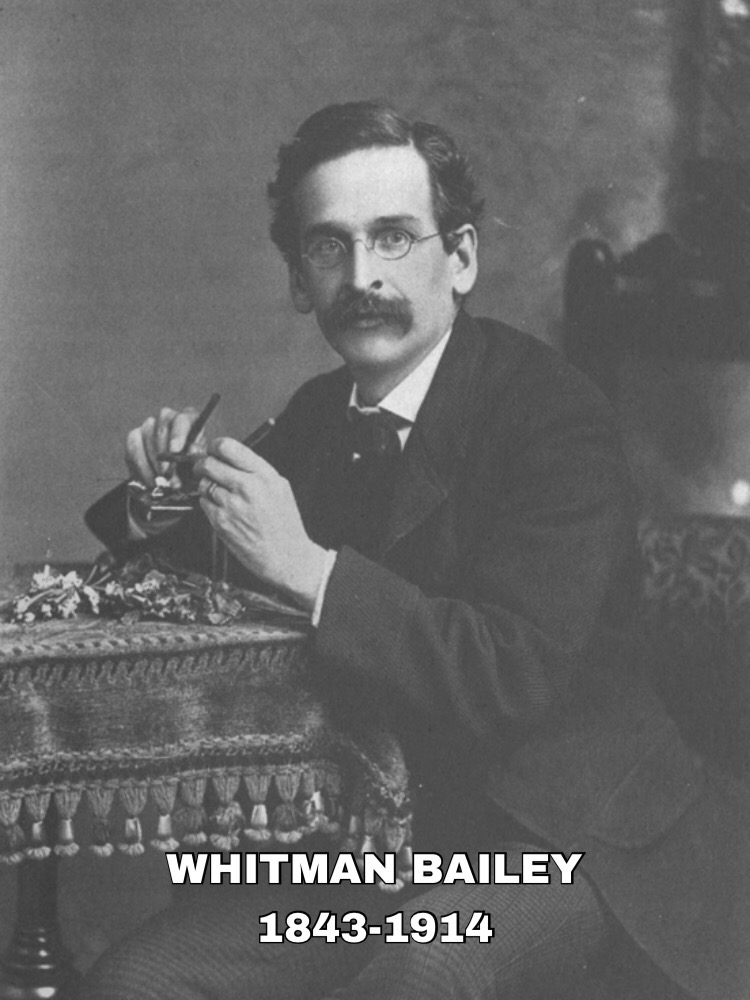

NOTABLE PEOPLE OF STAMFORD
ART
FILM
MUSIC

WHITMAN BAILEY:ARTIST
1884-1954
1924-1954 published work of Stamford in the Stamford Advocate
Created art of local folklore
Organizer of the Stamford Museum
Recognized black and white artist
BIO